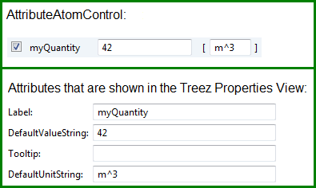

QuantityVariableField
Purpose
The purpose of the is to edit a Quantity (value & unit) variable .
It can be used by a .
Class name
org.treez.core.atom.variablefield.QuantityVariableField
Construction
A new is created by:
User interaction
Each VariableField provides two controls:
- a so called AttributeAtomControl that is used to edit a variable
(e.g. in the control of a ).
- a control that allows to edit the properties of the VariableField itself
(e.g. the label and the tool tip that are used in the AttributeAtomControl.).

The check box of the AttributeAtomControl enables/disables the VariableField. The context menu in the also allows to enable/disable the VariableField and to delete it.
Attributes
- Label: the label that is used in the AttributeAtomControl.
- DefaultValueString: the default value of the variable as String. This value is used if the VariableField is reset.
- Tooltip: the tool tip that is used in the AttributeAtomControl.
- DefaultUnitString: the default value for the unit of the quantity. This unit is used if the VariableField is reset.